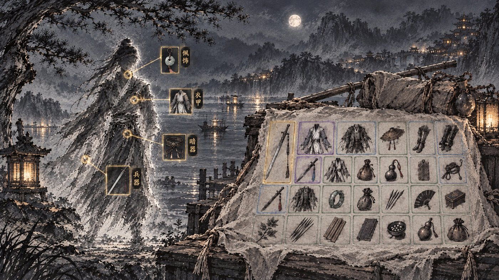
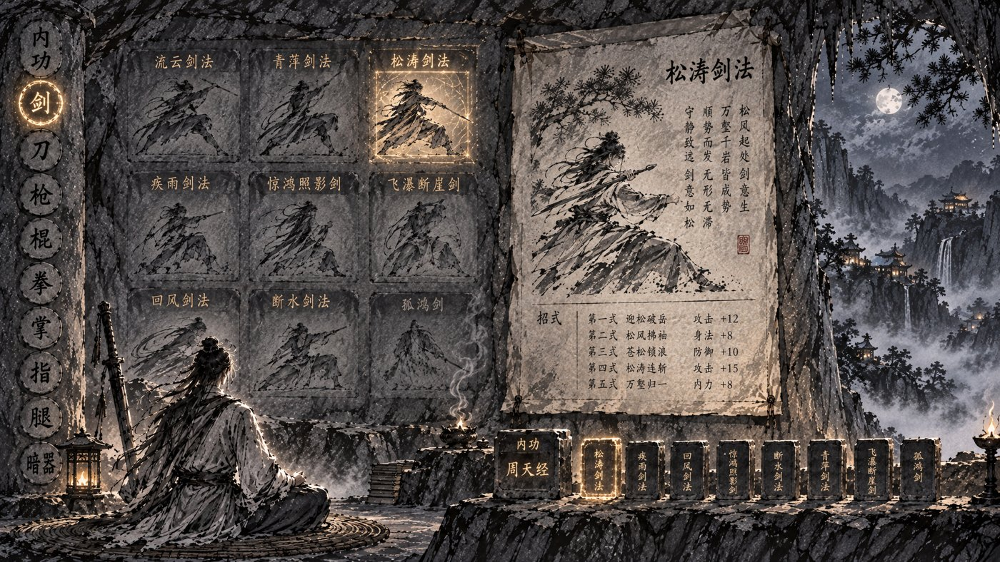
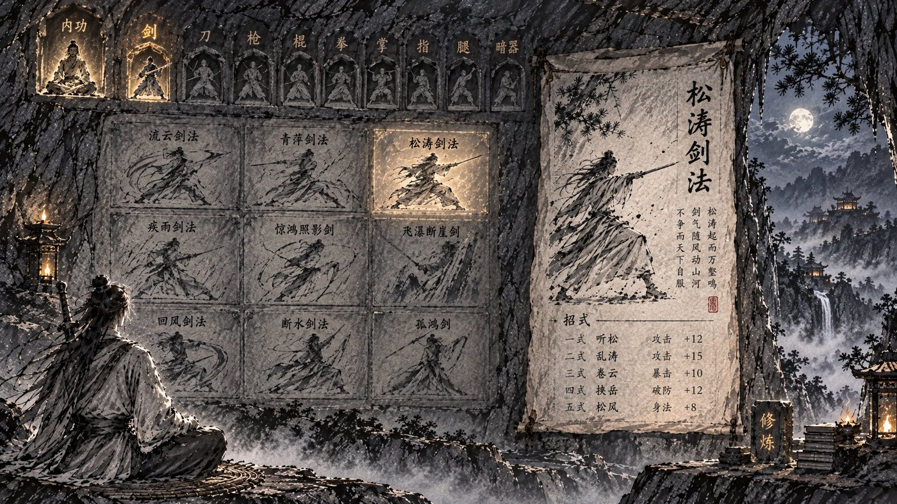

行囊 · 武功 · 方向挑选（第三轮）
行囊 · 雾中人影 + 布包袱
 己 · 蓝印花布包袱摊在草地上包袱皮是蓝印花布，边缘有褶皱、四角打结，铺在草地上。
布的质感最明显，花纹也能和其他页区分开。
己 · 蓝印花布包袱摊在草地上包袱皮是蓝印花布，边缘有褶皱、四角打结，铺在草地上。
布的质感最明显，花纹也能和其他页区分开。

庚 · 麻布包袱搭在木板上素色麻布摊在渡口木板上，边缘垂下木板，旁边横着一根扁担。
垂下来的布边让「软」的感觉更强；但素色麻布在淡墨底上和物品格对比稍弱。
武功 · 分类 + 石壁刻各门武学 + 大拓片

己 · 石柱分类 · 壁刻 · 拓片 · 石印装配（推荐）左边石柱竖刻「内功 剑 刀 枪 棍 拳 掌 指 腿 暗器」切换类别；石壁刻这一类的各门武学（流云剑法、青萍剑法……），已装的发金；右边大拓片是选中那门的详情：像、口诀、各式招式与效果；下面一排石印是装配位，第一枚大的是主修内功，后面八枚是装配的武学。
分类、藏书、详情、内功、装配五样都有了。

庚 · 龛楣分类 · 壁刻 · 拓片分类改成石壁上方一排小龛，每龛一尊像（内功是打坐像）。
AI 把龛画成了分类、没画出装配位；若选这张，装配要另放，比如拓片下方或龛楣下一排印。
石壁上刻的是同一类的不同武学，每块写武学名；「第几式」只出现在拓片里，指选中那门武学自己的招式。拓片里的招式名与数值为 AI 随手画，原型会换成真实招式与效果。